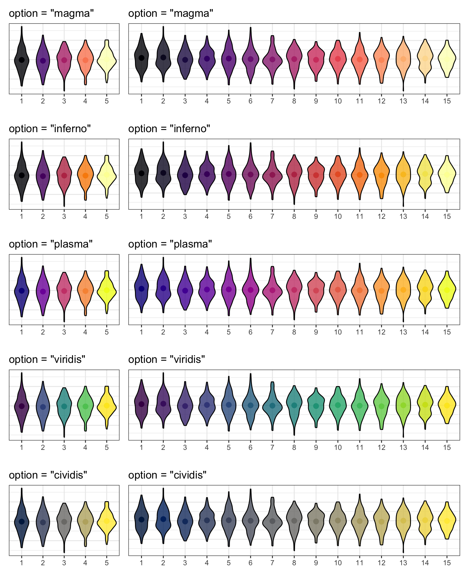

```{r}#| label: setup#| include: false# packages needed for this chapter sectionlibrary(tidyverse) # for data wranglinglibrary(ggthemes) # for themes```
Error in library(ggthemes): there is no package called 'ggthemes'
```{r}library(patchwork) # for combining plotslibrary(plotly) # for interactive plots```
Error in library(plotly): there is no package called 'plotly'
```{r}# devtools::install_github("hrbrmstr/waffle")library(waffle) # for waffle plots```
Error in library(waffle): there is no package called 'waffle'
```{r}library(ggbump) # for bump plots```
Error in library(ggbump): there is no package called 'ggbump'
```{r}library(treemap) # for treemap plots```
Error in library(treemap): there is no package called 'treemap'
```{r}library(ggwordcloud) # for word cloudslibrary(tidytext) # for manipulating text for word cloudslibrary(gganimate) # for animated plots#install.packages("rnaturalearthhires", repos = "http://packages.ropensci.org", type = "source")library(sf) # for mapping geomslibrary(rnaturalearth) # for map data```
Error in library(rnaturalearth): there is no package called 'rnaturalearth'
```{r}library(rnaturalearthdata) # extra mapping data```
Error in library(rnaturalearthdata): there is no package called 'rnaturalearthdata'
The code below creates two plots using the default (light) theme and palettes. First, load the data and set issue_category to a factor so you can control the order of the categories.
Next, create a bar plot of number of calls by issue category.
# create bar plotbar <-ggplot(data = survey_data, mapping =aes(x = issue_category,fill = issue_category)) +geom_bar(show.legend =FALSE) +labs(x ="Issue Category", y ="Count",title ="Calls by Issue Category")
And create a scatterplot of wait time by call time, distinguished by issue category.
#create scatterplotpoint <-ggplot(data = survey_data, mapping =aes(x = wait_time, y = call_time,color = issue_category)) +geom_point(alpha =0.5) +geom_smooth(method = lm, formula = y~x) +labs(x ="Wait Time",y ="Call Time",color ="Issue Category",title ="Wait Time by Call Time")
Finally, combine the two plots using the + from patchwork to see the default styles for these plots.
bar + point

Default plot styles.
Try changing the theme using built-in themes or customising the colours or linetypes with scale_* functions. See Appendix @ref(plotstyle) for details.
10.1.3 Annotations
It’s often useful to add annotations to a plot, for example, to highlight an important part of the plot or add labels. The annotate() function creates a specific geom at x- and y-coordinates you specify.
10.1.3.1 Text annotations
Add a text annotation by setting the geom argument to “text” or “label” and adding a label. Labels have padding and a background, while text is just text.
Backslash-n \n in the label text controls where the line breaks are. Try removing or changing the position of these to see what happens.
x and y control the coordinates of the label. You will likely have to play around with these values to get them right.
The argument hjust is the horizontal justification of text, and vjust is the vertical justification. The default values are 0.5, where the text is centred on the x and y coordinates. 0 will justify to the left and bottom, while 1 justifies to the right and top.
You can change the angle of text, but not labels.
bar +# add left-justified text to the second barannotate(geom ="text",label ="Our goal is to\nreduce this\ncategory",x =1.65, y =150,hjust =0, vjust =1, color ="white", fontface ="bold",angle =45) +# add a centred label to the third barannotate(geom ="label",label ="Our goal is\nto increase this\ncategory",x =3, y =75,hjust =0.5, vjust =1, color =" darkturquoise", fontface ="bold")
An example of annotation text and label.
See if you can work out how to make the figure below, starting with the following:
Hint: you will need to add 1 label annotation and 8 separate text annotations.
tibble(x =c(0, 0, 1, 1),y =c(0, 1, 0, 1)) |>ggplot(aes(x, y)) +geom_point(alpha =0.25, size =4, color ="red") +annotate("label", label ="In the\nmiddle",x =0.5, y =0.5,fill ="dodgerblue", color ="white",label.padding =unit(1, "lines"),label.r =unit(1.5, "lines")) +annotate("text", label ="Bottom\nLeft",x =0, y =0, hjust =0, vjust =0) +annotate("text", label ="Top\nLeft", x =0, y =1, hjust =0, vjust =1) +annotate("text", label ="Bottom\nRight",x =1, y =0, hjust =1, vjust =0) +annotate("text", label ="Top\nRight",x =1, y =1, hjust =1, vjust =1) +annotate("text", label ="45 degrees",x =0, y =0.5, hjust =0, angle =45) +annotate("text", label ="90 degrees",x =0.25, y =0.5, angle =90) +annotate("text", label ="270 degrees",x =0.75, y =0.5, angle =270)+annotate("text", label ="-45 degrees",x =1, y =0.5, hjust =1, angle =-45)
10.1.3.2 Other annotations
You can add other geoms to highlight parts of a plot. The example below adds a rectangle around a group of points, a text label, a straight arrow from the label to the rectangle, and a curved arrow from the label to an individual point.
point +# add a rectangle surrounding long call timesannotate(geom ="rect",xmin =100, xmax =275,ymin =140, ymax =180,fill ="transparent", color ="red") +# add a text labelannotate("text",x =260, y =120,label ="outliers") +# add an line with an arrow from the text to the boxannotate(geom ="segment", x =240, y =120, xend =200, yend =135,arrow =arrow(length =unit(0.5, "lines"))) +# add a curved line with an arrow # from the text to a wait time outlierannotate(geom ="curve", x =280, y =120, xend =320, yend =45,curvature =-0.5,arrow =arrow(length =unit(0.5, "lines")))
Example of annotatins with the rect, text, segment, and curve geoms.
See the ggforce package for more sophisticated options, such as highlighting a group of points with an ellipse.
10.1.4 Other Plots
10.1.4.1 Interactive Plots
The plotly package can be used to make interactive graphs. Assign your ggplot to a variable and then use the function ggplotly() on the plot object. Note that interactive plots only work in HTML files, not PDFs or Word files.
ggplotly(point)
Error in ggplotly(point): could not find function "ggplotly"
Hover over the data points above and click on the legend items.
10.1.4.2 Waffle Plots
In Chapter @ref(ggplot), we mentioned that pie charts are such a poor way to visualise proportions that we refused to even show you how to make one. Waffle plots are a delicious alternative.
By default, geom_waffle() represents each observation with a tile and splits these across 10 rows. You can play about with the n_rows argument to determine what works best for your data.
survey_data |>count(issue_category) |>ggplot(aes(fill = issue_category, values = n)) +geom_waffle(n_rows =23, # try setting this to 10 (the default)size =0.33, # line sizemake_proportional =FALSE, # use raw valuescolour ="white", # line colourflip =FALSE, # bottom-top or left-rightradius = grid::unit(0.1, "npc") # set to 0.5 for circles ) +theme_enhance_waffle() +# gets rid of axesscale_fill_colorblind(name ="Issue Category")
Error in geom_waffle(n_rows = 23, size = 0.33, make_proportional = FALSE, : could not find function "geom_waffle"
The waffle plot can also be used to display the counts as proportions To achieve these, set n_rows = 10 and make_proportional = TRUE. Now, rather than each tile representing one observation, each tile represents 1% of the data.
Error in geom_waffle(n_rows = 10, size = 0.33, make_proportional = TRUE, : could not find function "geom_waffle"
10.1.4.3 Treemap
Treemap plots are another way to visualise proportions. Like the waffle plots, you need to count the data by category first. You can use any brewer palette for the fill.
survey_data |>count(issue_category) |>treemap(index ="issue_category", # column with number of rectanglesvSize ="n", # column with size of rectangletitle ="",palette ="BuPu",inflate.labels =TRUE# expand labels to size of rectangle )
Error in treemap(count(survey_data, issue_category), index = "issue_category", : could not find function "treemap"
You can also represent multiple categories with treemaps
survey_data |>count(issue_category, employee_id) |>arrange(employee_id) |>treemap(# use c() to specify two variablesindex =c("employee_id", "issue_category"), vSize ="n", title ="",palette ="Dark2",# set different label sizes for each type of labelfontsize.labels =c(30, 10), # set different alignments for two label typesalign.labels =list(c("left", "top"), c("center", "center")) )
Error in treemap(arrange(count(survey_data, issue_category, employee_id), : could not find function "treemap"
10.1.4.4 Bump Plots
Bump plots are very useful for visualising how rankings change over time. So first, we need to get some ranking data. Let’s start with a more typical raw data table, containing an identifying column of person and three columns for their scores each week
# make a small dataset of scores for 3 people over 3 weeksscore_data <-tribble(~person, ~week_1, ~week_2, ~week_3,"Abeni", 80, 75, 90,"Beth", 75, 85, 75,"Carmen", 60, 70, 80)
Now we make the table long, group by week, and use the rank() function to find the rank of each person’s score each week. Use n() - rank(score) + 1 to reverse the ranks so that the highest score gets rank 1. We also need to make the week variable a number.
Error in loadNamespace(x): there is no package called 'ggbump'
We can make this more attractive by customising the axes and adding text labels. Try running each line of this code to see how it builds up.
Add label = person to the mapping so we can add in text labels.
Increase the size of the lines with the size argument to geom_bump()
We don’t need labels for weeks 1.5 and 2.5, so change the x-axis breaks
The expand argument for the two scale_ functions expands the plot area so we can fit text labels to the right.
It makes more sense to have first place at the top, so reverse the order of the y-axis with scale_y_reverse() and fix the breaks and expansion.
Add text labels with geom_text(), but just for week 3, so set data = filter(rank_data, week == 3) for this geom.
Set x = 3.05 to move the text labels just to the right of week 3, and set hjust = 0 to right-justify the text labels (the default is hjust = 0.5, which would center them on 3.05).
Remove the legend and grid lines. Increase the x-axis text size.
Error in loadNamespace(x): there is no package called 'ggbump'
10.1.4.5 Word Clouds
Word clouds are a common way to summarise text data. First, download amazon_alexa.csv into your data folder and then load it into an object. This dataset contains text reviews as well as the 1-5 rating from customers who bought an Alexa device on Amazon.
# https://www.kaggle.com/sid321axn/amazon-alexa-reviews# extracted from Amazon by Manu Siddhartha & Anurag Bhattalexa <- rio::import("data/amazon_alexa.csv")
We can use this data to look at how the words used differ depending on the rating given. To make the text data easy to work with, the function tidytext::unnest_tokens() splits the words in the input column into individual words in a new output column. unnnest_tokens() is particularly helpful because it also does things like removes punctuation and transforms all words to lower case to make it easier to work with. Compare words and alexa to see how they map on to each other.
words <- alexa |>unnest_tokens(output ="word", input ="verified_reviews")
We can then add another line of code using a pipe that counts how many instances of each word there is by rating to give us the most popular words.
The problem is that the most common words are all function words rather than content words, which makes sense because these words have the highest word frequency in natural language.
Helpfully, tidytext contains a list of common “stop words”, i.e., words that you want to ignore, that are stored in an object named stop_words. It is also very useful to define a list of custom stop words based upon the unique properties of your data (it can sometimes take a few attempts to identify what’s appropriate for your dataset). This dataset contains a lot of numbers that aren’t informative, and it also contains “https” from website links, so we’ll get rid of both with a custom stop list.
Once you have defined your stop words, you can then use anti_join() to remove any word that is present in the stop word list.
To get the top 25 words, we then group by rating and use dplyr::slice_max(), ordered by the column n.
custom_stop <-tibble(word =c(0:9, "https", 34))words <- alexa |>unnest_tokens(output ="word", input ="verified_reviews") |>count(word, rating) |>anti_join(stop_words, by ="word") |>anti_join(custom_stop, by ="word") |>group_by(rating) |>slice_max(order_by = n, n =25, with_ties =FALSE) |>ungroup()
First, let’s make a word cloud for customers who gave a 1-star rating:
Filter retains only the data for 1-star ratings.
label comes from the word column and is the data to plot (i.e., the words).
colour makes the words red (you could also set this to word to give each word a different colour or n to vary colour continuously by frequency).
size makes the size of the word proportional to n, the number of times the word appeared.
It’s worth highlighting that whilst word clouds are very common, they’re really the equivalent of pie charts for text data because we’re not very good at making accurate comparisons based on size. You might be able to see what’s the most popular word, but can you accurately determine the 2nd, 3rd, 4th or 5th most popular word based on the clouds alone? There’s also the issue that just because it’s text data doesn’t make it a qualitative analysis and just because something is said a lot doesn’t mean it’s useful or important. But, this argument is outwith the scope of this book, even if it is a recurring part of Emily’s life thanks to her qualitative wife.
10.1.4.6 Maps
Working with maps can be tricky. The sf package provides functions that work with ggplot2, such as geom_sf(). The rnaturalearth package (and associated data packages that you may be prompted to download) provide high-quality mapping coordinates.
ne_countries() returns world country polygons (i.e., a world map). We specify the object should be returned as a “simple feature” class sf so that it will work with geom_sf(). If you would like a deep dive on simple feature objects, check out a vignette from the sf package.
It’s worth checking out what the object ne_countries() returns to see just how much information is available.
Try changing the values and colours below to get a sense of how the code works.
# get the world map coordinatesworld_sf <-ne_countries(returnclass ="sf", scale ="medium")
Error in ne_countries(returnclass = "sf", scale = "medium"): could not find function "ne_countries"
# plot them on a light blue backgroundggplot() +geom_sf(data = world_sf, size =0.3) +theme(panel.background =element_rect(fill ="lightskyblue2"))
Error: object 'world_sf' not found
You can combine multiple countries using bind_rows() and visualise them with different colours for each country.
# get and bind country datauk_sf <-ne_states(country ="united kingdom", returnclass ="sf")
Error in ne_states(country = "united kingdom", returnclass = "sf"): could not find function "ne_states"
Error in `fortify()`:
! `data` must be a <data.frame>, or an object coercible by `fortify()`,
or a valid <data.frame>-like object coercible by `as.data.frame()`.
Caused by error in `.prevalidate_data_frame_like_object()`:
! `dim(data)` must return an <integer> of length 2.
You can join Scottish population data to the map table to visualise data on the map using colours or labels.
Error in ne_states(geounit = "Scotland", returnclass = "sf"): could not find function "ne_states"
# load population data from# https://www.indexmundi.com/facts/united-kingdom/quick-facts/scotland/populationscotpop <-read_csv("data/scottish_population.csv", show_col_types =FALSE)# join data and fix typo in the mapscotmap_pop <- scotland_sf |>mutate(name =ifelse(name =="North Ayshire", yes ="North Ayrshire", no = name)) |>left_join(scotpop, by ="name") |>select(name, population, geometry)
Error: object 'scotland_sf' not found
There is a typo in the data from rnaturalearth, so you need to change “North Ayshire” to “North Ayrshire” before you join the population data.
Setting the fill to population in geom_sf() gives each region a colour based on its population.
The colours are customised with scale_fill_viridis_c(). The breaks of the fill scale are set to increments of 100K (1e5 in scientific notation) and the scale is set to span 0 to 600K.
paste0() creates the labels by taking the numbers 0 through 6 and adding “00 k” to them.
Finally, the position of the legend is moved into the sea using legend.position().
Animated plots are a great way to add a wow factor to your reports, but they can be complex to make, distracting, and not very accessible, so use them sparingly and only for data visualisation where the animation really adds something. The package gganimate has many functions for animating ggplots.
Here, we’ll load some population data from the United Nations. Download the file into your data folder and open it in Excel first to see what it looks like. The code below gets the data from the first tab, filters it to just the 6 world regions, makes the data long, and makes sure the year column is numeric and the pop column shows population in whole numbers (the original data is in 1000s).
Let’s make an animated plot showing how the population in each region changes with year. First, make a static plot. Filter the data to the most recent year so you can see what a single frame of the animation will look like.
To convert this to an animated plot that shows the data from multiple years:
Remove the filter and add transition_time(year).
Use the {} syntax to include the frame_time in the title.
Use anim_save() to save the animation to a GIF file and set this code chunk to eval = FALSE because creating an animation takes a long time and you don’t want to have to run it every time you knit your report.
anim <- worldpop |>ggplot(aes(x = region, y = pop, fill = region)) +geom_col(show.legend =FALSE) +scale_fill_viridis_d() +scale_x_discrete(name ="",guide =guide_axis(n.dodge=2))+scale_y_continuous(name ="Population",breaks =seq(0, 3e9, 1e9),labels =paste0(0:3, "B")) +ggtitle('Year: {frame_time}') +transition_time(year)dir.create("images", FALSE) # creates an images directory if neededanim_save(filename ="images/gganim-demo.gif",animation = anim,width =8, height =5, units ="in", res =150)
You can show your animated gif in an html report (animations don’t work in Word or a PDF) using include_graphics(), or include the GIF in a dynamic document like PowerPoint.
knitr::include_graphics("images/gganim-demo.gif")
Animated gif.
There are actually not many plots that are really improved by animating them. The plot below gives the same information at a single glance.
Warning: Using `size` aesthetic for lines was deprecated in ggplot2 3.4.0.
ℹ Please use `linewidth` instead.
10.1.5 Resources
There are so many more options for data visualisation in R than we have time to cover here. The following resources will get you started on your journey to informative, intuitive visualisations.
```{r}#| label: setup#| include: false# packages needed for this chapter sectionlibrary(tidyverse) # data wrangling functionslibrary(bookdown) # for chaptered reportslibrary(flexdashboard) # for dashboards```
Error in library(flexdashboard): there is no package called 'flexdashboard'
```{r}library(DT) # for interactive tables```
10.2.2 Interactive tables
One way to make your reports more exciting is to use interactive tables. The DT::datatable() function displays a table with some extra interactive elements to allow readers to search and reorder the data, as well as controlling the number of rows shown at once. This can be especially helpful. This only works with HTML output types. The DT website has extensive tutorials, but we’ll cover the basics here.
You can customise the display, such as changing column names, adding a caption, moving the location of the filter boxes, removing row names, applying classes to change table appearance, and applying advanced options.
# https://datatables.net/reference/option/my_options <-list(pageLength =5, # how many rows are displayedlengthChange =FALSE, # whether pageLength can changeinfo =TRUE, # text with the total number of rowspaging =TRUE, # if FALSE, the whole table displaysordering =FALSE, # whether you can reorder columnssearching =FALSE# whether you can search the table)datatable(data = scotpop,colnames =c("County", "Population"),caption ="The population of Scottish counties.",filter ="none", # "none", "bottom" or "top"rownames =FALSE, # removes the number at the leftclass ="cell-border hover stripe", # default is "display"options = my_options)
Create an interactive table like the one below from the diamonds dataset of diamonds where the table value is greater than 65 (the whole table is much too large to display with an interactive table). Show 20 items by default and remove the search box, but leave in the filter and other default options.
my_options <-list(pageLength =20, # how many rows are displayedsearching =FALSE# whether you can search the table)diamonds |>filter(table >65) |>select(-table, -(x:z)) |> DT::datatable(caption ="All diamonds with table > 65.",options = my_options )
10.2.3 Other formats
You can create more than just reports with R Markdown. You can also create presentations, interactive dashboards, books, websites, and web applications.
10.2.3.1 Presentations
You can choose a presentation template when you create a new R Markdown document. We’ll use ioslides for this example, but the other formats work similarly.
Ioslides RMarkdown template.
The main differences between this and the Rmd files you’ve been working with until now are that the output type in the YAML header is ioslides_presentation instead of html_document and this format requires a specific title structure. Each slide starts with a level-2 header.
The template provides you with examples of text, bullet point, code, and plot slides. You can knit this template to create an HTML document with your presentation. It often looks odd in the RStudio built-in browser, so click the button to open it in a web browser. You can use the space bar or arrow keys to advance slides.
The code below shows how to load some packages and display text, a table, and a plot. You can see the HTML output here.
---title: "Presentation Demo"author: "Lisa DeBruine"output: ioslides_presentation---```{r setup, include=FALSE}knitr::opts_chunk$set(echo = FALSE)library(tidyverse)library(kableExtra)```## Slide with MarkdownThe following slides will present some data from the `diamonds` dataset from **ggplot2**.Diamond price depends on many features, such as:- cut- colour- clarity- carats## Slide with a Table```{r}diamonds %>% group_by(cut, color) %>% summarise(avg_price = mean(price), .groups = "drop") %>% pivot_wider(names_from = cut, values_from = avg_price) %>% kable(digits = 0, caption = "Mean diamond price by cut and colour.") %>% kable_material()```## Slide with a Plot```{r pressure}ggplot(diamonds, aes(x = cut, y = price, color = color)) + stat_summary(fun = mean, geom = "point") + stat_summary(aes(x = as.integer(cut)), fun = mean, geom = "line") + scale_x_discrete(position = "top") + scale_color_viridis_d(guide = guide_legend(reverse = TRUE)) + theme_minimal() ```
10.2.3.2 Dashboards
Dashboards are a way to display text, tables, and plots with dynamic formatting. After you install flexdashboard, you can choose a flexdashboard template when you create a new R Markdown document.
Flexdashboard RMarkdown template.
The code below shows how to load some packages, display two tables in a tabset, and display two plots in a column. You can see the HTML output here.
---title: "Flexdashboard Demo"output: flexdashboard::flex_dashboard: social: [ "twitter", "facebook", "linkedin", "pinterest" ] source_code: embed orientation: columns vertical_layout: fill---```{r setup, include=FALSE}library(flexdashboard)library(tidyverse)library(kableExtra)library(DT) # for interactive tablestheme_set(theme_minimal())```Column {data-width=350, .tabset}--------------------------------### By CutThis table uses `kableExtra` to render the table with a specific theme.```{r}diamonds %>% group_by(cut) %>% summarise(avg = mean(price), .groups = "drop") %>% kable(digits = 0, col.names = c("Cut", "Average Price"), caption = "Mean diamond price by cut.") %>% kable_classic()```### By ColourThis table uses `DT::datatable()` to render the table with a searchable interface.```{r}diamonds %>% group_by(color) %>% summarise(avg = mean(price), .groups = "drop") %>% DT::datatable(colnames = c("Colour", "Average Price"), caption = "Mean diamond price by colour", options = list(pageLength = 5), rownames = FALSE) %>% DT::formatRound(columns=2, digits=0)```Column {data-width=350}-----------------------### By Clarity```{r by-clarity, fig.cap = "Diamond price by clarity"}ggplot(diamonds, aes(x = clarity, y = price)) + geom_boxplot() ```### By Carats```{r by-carat, fig.cap = "Diamond price by carat"}ggplot(diamonds, aes(x = carat, y = price)) + stat_smooth()```
Change the size of your web browser to see how the boxes, tables and figures change.
The best way to figure out how to format a dashboard is trial and error, but you can also look at some sample layouts.
10.2.3.3 Books
You can create online books with bookdown. In fact, the book you’re reading was created using bookdown. After you download the package, start a new project and choose “Book project using bookdown” from the list of project templates.
Bookdown project template.
Each chapter is written in a separate .Rmd file and the general book settings can be changed in the _bookdown.yml and _output.yml files.
10.2.3.4 Websites
You can create a simple website the same way you create any R Markdown document. Choose “Simple R Markdown Website” from the project templates to get started. See Appendix @ref(webpages) for a step-by-step tutorial.
For more complex, blog-style websites, you can investigate blogdown. After you install this package, you will also be able to create template blogdown projects to get you started.
This is well outside the scope of this class, but the skills you’ve learned here provide a good start. The free book Building Web Apps with R Shiny by one of the authors of this book can get you started creating shiny apps.